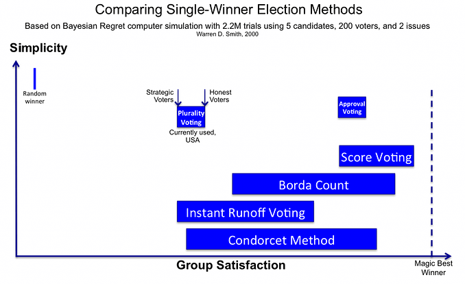

Non, cela ne parle pas de l'élection présidentielle de 2017. Enfin, pas uniquement de ça, en tout cas.
Avant tout, je dois vous expliquer un bug étrange de notre système électoral. Imaginons deux candidats, Camille Carré  et Théo Triangle
et Théo Triangle  , le long de deux axes politiques (par exemple, « droite contre gauche » et « mondialisation contre protectionnisme »). Imaginons aussi un électeur
, le long de deux axes politiques (par exemple, « droite contre gauche » et « mondialisation contre protectionnisme »). Imaginons aussi un électeur  qui vote pour la ou le candidat le plus proche de ses convictions. À quoi est-ce que ça ressemble ?
qui vote pour la ou le candidat le plus proche de ses convictions. À quoi est-ce que ça ressemble ?
cliquez & faites glisser
les candidats et l'électeur:
Ce n'est pas évident. Triangle a des arguments pointus, mais Carré a davantage de dimensions ! Hélas, au final on ne peut voter que pour une seule personne.
Bien sûr, il y a d'autres votants dans une élection. Voyons à quoi ressemble le scrutin avec une centaine de votants.
déplacez les candidats & les électeurs.
(pour les déplacer, faites glisser le centre de la foule)
observez comment le résultat de l'élection évolue :
Voici maintenant une autre élection. Théo Triangle est déjà devant Camille Carré dans les sondages, quand un 3e candidat, Hichem Hexagone  se présente (les soutiens d'Hexagone aiment le fait qu'il voit les problèmes sous plus d'angles). Inspiré par son succès, il se place politiquement très proche de Triangle.
se présente (les soutiens d'Hexagone aiment le fait qu'il voit les problèmes sous plus d'angles). Inspiré par son succès, il se place politiquement très proche de Triangle.
On pourrait croire que donner aux électeurs davantage de ce qu'ils aiment donnera un meilleur résultat, ou au moins, pas pire, n'est-ce pas ? Et bien…
au départ, gagne contre .
glissez juste en dessous de ,
et voyez ce qui se passe :
Eh oui. Camille Carré, la candidate la moins populaire, l'emporte ! Quand vous avez deux bons candidats, ils se « volent » des voix entre eux, ce qui permet à un troisième, moins bon, de gagner.
On appelle ça le partage des voix. L'exemple français le plus célèbre est l'élection de 2002, quand de nombreux candidats minoritaires de gauche ont « pris » des votes à Lionel Jospin, permettant à Jean-Marie Le Pen de se hisser, contre toute attente, au second tour.
Le phénomène de partage/vol des voix devrait en théorie être moins fort en 2017. Après tout, les nombreuses primaires sont censées avoir réduit le nombre de candidats d'un même courant politique. D'un autre côté, peut-être que les primaires amplifient les bugs de notre système électoral. En tout cas, on a déjà l'exemple de François Bayrou, qui a renoncé à se présenter pour éviter « la dispersion des suffrages et des propositions » (Bayrou, le 22 févr. 2017).
Mais encore une fois, le sujet n'est pas l'élection présidentielle de 2017.
Le but est de construire une démocratie en laquelle les gens ont confiance.
Rétablir la confiance est une tâche complexe sans solution simple. Mais je pense qu'il existe bien une première étape simple. C'est une étape qui pourrait éviter le besoin de « choisir entre deux maux », et qui pourrait donner aux citoyens plus de choix, de meilleurs choix. Et pourtant, cette solution n'est pas si intimidante que de revoir le financement des partis, les circonscriptions électorales, ou le manque de représentation proportionnelle. Non, il s'agit uniquement de changer un bout de papier, et la méthode pour compter ces papiers.
Cette idée n'est pas le principal problème. Ça n'est pas la solution à tout. Mais par rapport à l'effort fourni, c'est là qu'on pourra faire le plus d'améliorations.
Voyons comment créer un meilleur scrutin.
Bon, vous avez sans doute quelques objections !
Premièrement, pourquoi est-ce ceux qui sont au pouvoir changeraient le mode de scrutin qui leur a permis d'accéder au pouvoir ? Et bien, la droite comme la gauche ont déjà perdu des élections importantes à cause du partage des voix. Supprimer ce bug serait un avantage pour les petits partis, mais aussi pour les grands ! Par ailleurs, ce genre de réforme électorale fait déjà des émules. Il y a quelques mois seulement, l'état du Maine a adopté la méthode du Vote Alternatif. Et Justin Trudeau, le Premier ministre « beau-gosse » du Canada, veut mettre en place un meilleur scrutin dans son pays dès 2017.
{kind=link}
Deuxièmement, j'ai cru entendre que quelqu'un avait démontré que tous les modes de scrutins étaient injustes ? Pas exactement. Vous pensez au célèbre théorème d'impossibilité de Kenneth Arrow, le mathématicien qui, dans les années 50, a lancé l'étude des systèmes électoraux.
Il y a deux réponses à ça :
- il n'en reste pas moins que certains types de scrutins sont plus justes que d'autres, même si aucun n'est parfait. Et
- la démonstration de Kenneth Arrow ne s'applique pas à tous les types de votes, c'est une erreur fréquente. Elle ne s'applique qu'aux systèmes où l'on range les candidats selon un ordre.
Mais d'abord, voyons de plus près les systèmes de vote qui sont utilisés aujourd'hui :
SCRUTIN UNINOMINAL MAJORITAIRE
comme avant, cliquez & glissez les candidats et l'électeur
Comment compter : On additionne tout simplement les voix. Celui ou celle qui a le plus de voix, gagne.
Ça semble logique, mais comme on l'a déjà vu cela peut produire un bug étrange, où deux bons candidats peuvent faire basculer le résultat en faveur d'un troisième, mauvais candidat. C'est la raison pour laquelle certaines personnes votent « stratégiquement », en votant non pas pour leur véritable favori, mais choisissent « le moins pire ». Laisser les gens voter de façon stratégique n'est pas un problème en soi, mais posez-vous la question : comment peut-on s'attendre à ce que nos élus soient honnêtes, quand le scrutin lui-même ne nous permet pas de voter honnêtement ?
Bref, pour résoudre le problème du partage de voix, d'autres systèmes ont été suggérés, tels que…
VOTE PAR CLASSEMENT
là aussi, cliquez & faites glisser
Comment compter : il y a en fait plusieurs façons de compter ce genre de bulletins. Je vais parler ici des trois principales méthodes…
Vote Alternatif : c'est l'alternative la plus populaire au Scrutin Uninominal Majoritaire. L'Australie et l'Irlande l'utilisent pour leurs élections nationales. San Francisco, Minneapolis, et Portland (état du Maine) l'ont choisi pour les municipales. Et Justin Trudeau, Premier ministre viril du Canada, réfléchit aussi au vote alternatif.
{kind=link}
Le Vote Alternatif est un peu plus compliqué que Scrutin Majoritaire, mais voilà comment ça fonctionne :
- On compte tous les 1ers choix.
- Si une personne a plus de 50 % des voix, elle gagne ! FIN.
- Sinon, on élimine celui ou celle qui a eu le moins de voix.
- Nouveau « tour » : on compte les voix comme si le candidat éliminé ne s'était pas présenté.
- On répète cette opération jusqu'à ce que quelqu'un ait 50 % ou plus des voix.
Si tout ça semble trop lourd, il y a une méthode bien plus simple de compter des bulletins avec classement…
Méthode Borda : il s'agit simplement d'additionner les rangs. Comme au golf, celui ou celle qui a le plus petit score l'emporte. Le décompte de Borda est utilisé en Slovénie et dans une poignée de petites îles en Micronésie.
Mais si vous voulez une méthode de décompte encore plus obscure, vous pouvez essayer…
La Méthode Condorcet : on simule une « élection » entre chaque paire de candidats, en utilisant les informations de classement fournies par les électeurs sur leurs bulletins. SI il y a un candidat qui bas tous les autres en un-contre-un, ce candidat gagne l'élection. Attention, c'est un gros SI (comme nous le verrons plus tard…). Le bon côté de cette méthode, c'est que quand elle permet de déterminer un gagnant, c'est toujours le meilleur candidat théoriquement possible.
Pour l'instant, cette méthode n'est pas utilisée dans des élections nationales mais par certaines organisations publiques. En 2016, le vote populaire pour le nom de la nouvelle région issue de la fusion du Languedoc Roussillon et de Midi-Pyrénées a été comptabilisé selon la méthode de Condorcet (le nom retenu est « Occitanie »).
Voilà, vous connaissez désormais les modes de scrutin où l'on trie les candidats – ceux pour lesquels Kenneth Arrow a démontré qu'ils étaient toujours invalides de manière crasse ! Mais quels sont les modes de scrutin où l'on ne trie pas les candidats ? Ils sont plus méconnus, mais maintenant, au moins, vous les connaitrez :
VOTE PAR APPROBATION
ouaip, toujours cliquer & glisser
Comment compter : ajoutez les approbations. La personne qui a le plus d'approbations gagne.
Comment ? On peut choisir plus d'un candidat ? Ce n'est pas de la triche, comme si on avait plusieurs votes par personne ? Je comprends votre interrogation. En fait, votre vote n'a jamais été qu'une simple voix. Quand vous votez, vous exprimez votre avis sur l'ensemble des candidats. Dans ce mode de scrutin, vous avez seulement la liberté de soutenir tous les candidats que vous approuvez, et non pas uniquement votre favori ou votre deuxième favori « stratégique ».
Mais si vous voulez un mode de scrutin encore plus explicite, pourquoi ne pas essayer le…
VOTE PAR VALEURS
vous savez quoi faire.
Comment compter : additionnez simplement les notes. Celui ou celle qui a le score moyen le plus haut, gagne. Un peu comme les notes des commentaires Amazon, mais version Démocratie (note : ceci n'est pas un vote par classement, car deux candidats peuvent avoir le même score).
Voilà donc les six systèmes qu'on retrouve le plus souvent : celui que nous utilisons, et cinq alternatives populaires. Mais comment savoir laquelle de ces alternatives est, en vrai, la meilleure ? Est-ce qu'elles-mêmes n'auraient pas des bugs ? Et du coup, connaissant ces bugs, quel mode de scrutin serait « le meilleur » ?
Comme on l'a fait avant, simulons des élections !
Vous vous souvenez de la simulation du partage des voix que nous avons vu un peu plus tôt ? Et bien, la revoilà, sauf que cette fois vous pouvez basculer entre six modes de scrutin différents !
déplacez juste en dessous de pour voir le partage des voix.
comparez ensuite les six modes de scrutins :
(note: dans les rares cas d'ex æquo, je choisis aléatoirement le vainqueur)
Comme vous pouvez le voir, tous les modes de scrutin sont immunisés contre le vol de voix sauf le Scrutin Uninominal Majoritaire. Quoi, c'est bon, on a fini ? Bang bang, le bug est mort ? On a juste à choisir une des alternatives et c'est réglé ?
Et non ! En se débarrassant d'un bug, ces modes de scrutin alternatifs créent d'autres bugs. Dans certains cas, le remède est pire que la maladie.
Prenons par exemple, le Vote Alternatif. Au début, Théo Triangle gagne, et vous allez encore rapprocher davantage les intentions de vote vers lui. Normalement, si un candidat est déjà en train de gagner une élection, et devient encore plus populaire, il devrait toujours gagner, non ?
Vous avez probablement deviné où je voulais en venir…
déplacez les votants  doucement vers :
doucement vers :
Que s'est-il passé ? À la base, est éliminé au premier tour, donc se retrouve confronté à , qui est plus faible, et gagne. Mais quand on déplace un tout petit peu les intentions de vote dans la direction de , la personne éliminée change ! Maintenant, est éliminée, ce qui veut dire que se retrouve face à , qui est plus fort, et perd.
Avec le Vote Alternatif, il est donc possible qu'un favori perde en devenant plus populaire. Quelle absurdité !
Est-ce que ça arrive souvent ? Il y a quelques cas confirmés, et des mathématiciens estiment que ce bug pourrait se produire dans 14,5 % des cas. Malheureusement, nous ne pouvons pas le savoir avec certitude, car les gouvernements n'ouvrent pas tous suffisamment d'informations relatives aux votes pour reconstruire le VA et vérifier les résultats.
Donc, non seulement le bug du Vote Alternatif est aussi peu démocratique que celui du Scrutin Uninominal Majoritaire mais, pire, sa méthode de décompte est complexe et opaque, ce qu'on ne peut pas reprocher au SUM. Vous savez comme moi qu'une absence de transparence est encore plus problématique de nos jours tant la confiance dans les gouvernements n'a jamais été aussi faible.
(Attendez ! On parlera du risque du vote stratégique plus tard. Est-ce que le VA fera un retour inattendu ? Suspens…)
Bon, s'en est fini de l'alternative la plus populaire. Qu'en est-il de la seconde alternative, la méthode de Borda ? Dans la prochaine simulation, vous allez déplacer un candidat perdant dans la direction d'un autre. Dans le cas du SUM, le partage des voix aurait divisé leurs intentions de vote, les faisant perdre tous deux encore plus. Regardez ce qui arrive avec la méthode de Borda…
déplacez juste un peu dans la direction de :
Et ouais. La méthode de Borda à l'effet inverse du partage des voix. Au lieu que ce soit un bon candidat qui en affaiblisse un autre en s'en rapprochant, avec la méthode de Borda, c'est un mauvais candidat qui aide un autre mauvais candidat en s'en rapprochant.
Qu'est-ce qui se passe ? Au début, les votants classent >>, mais après vous déplacez plus près que , du coup les votants basculent vers un classement >>, ce qui pénalise suffisamment pour le faire perdre face à .
Et pourtant, la méthode de Borda n'est pas la pire. Au moins, on peut reconnaitre qu'elle est plus simple et transparente que le Vote Alternatif. Et si on comparait à la Méthode de Condorcet ? Quand la Méthode de Condorcet désigne un gagnant, c'est "théoriquement" toujours le meilleur… mais ça, c'est quand elle désigne un gagnant.
Jusqu'ici, j'ai simulé les votants comme un seul et même groupe, avec un centre et un certain diamètre. Quand on voit à quel point les élections sont, aujourd'hui, polarisées, on peut imaginer qu'en réalité nous avons plusieurs groupes de votants avec des centres complètement différents. La Méthode de Condorcet essaie de désigner le candidat qui bat tous les autres en face à face. Mais avec des votants polarisés, on peut finir avec un paradoxe façon Pierre-Feuille-Ciseaux, où une majorité de votants préfère A à B, B à C et C à A.
Dans certaines situations, les autres modes de scrutin avaient des bugs. La méthode de Condorcet, elle, s'effondre. Essayez par vous-même :
créer votre propre paradoxe de Condorcet !
déplacez les votants de manière à ce que PERSONNE ne gagne :
Bon, en pratique (même si en fait aucun gouvernement n'utilise ce mode de scrutin), quand la Méthode de Condorcet échoue à déterminer un vainqueur, l'élection utilise une des autres méthodes comme la méthode de Borda. Mais bon, si vous faites ça, vous récupérez les bugs de la solution de secours. Poubelle.
Scrutin Uninominal Majoritaire, Vote Alternatif, méthodes de Borda ou Condorcet… Tous ces systèmes utilisent un classement — ceux pour lesquels notre mathématicien du début, Kenneth Arrow, a prouvé qu'ils étaient toujours injustes ou buggués d'une manière ou d'une autre. Qu'en est-il des systèmes où on ne classe pas, comme le Vote par Approbation et le Vote par Valeur ? Et bien…
…je n'ai pas trouvé de simulation pour montrer leurs défauts. Il faut dire qu'en théorie, ils n'ont pas de gros défauts.
Mais c'est vraiment un gros, gros « en théorie » ! Si ça se trouve, en pratique, les votants calculateurs appliquent le Vote par Approbation et le Vote par Valeurs exactement comme le Scrutin Uninominal Majoritaire, en donnant 5 à leur candidat favori et en désapprouvant fortement tous les autres même s'ils les apprécient (les anglophones peuvent lire cette critique du vote par approbation, en faveur du Scrutin Uninominal Majoritaire, sur FairVote).
Mais bon, même si le Vote par Approbation et le Vote par Valeurs ne vous incitent pas à exprimer une opinion sincère concernant la personne que vous mettez en seconde position, le SUM et le VA vous punissent carrément d'avoir exprimé honnêtement votre premier choix. De plus, si le Vote par Approbation peut être manipulé, alors le VA peut l'être aussi, en pire (Ici une contre-critique de l'article de Fairvote par un mathématicien, en défense du Vote par Approbation). Bref, au final…
Il va nous falloir un paquet de simulations supplémentaires.
Ci-dessous et en anglais, un graphique (source), montrant le résultat de 2,2 millions de simulations. Une incroyable variété de scénarios a été testée. Avec tous les votants honnêtes. Avec tous les votants agissant de manière stratégique. Avec des indécis, avec quelques stratèges, avec certains qui savaient à l'avance l'opinion des autres ou qui ne savaient pas, ou qui le savaient un peu, etc. Vous savez qu'il s'agit d'un vrai graphique de mathématicien parce que ça fait saigner les yeux :

Les résultats pour chaque méthode sont représentés par des barres bleues plutôt moches. Plus la barre se situe vers la droite, plus heureux sont les votants. Plus la barre est vers le haut, plus le mode de scrutin est simple. La largeur de la barre est définie les différentes mesures, suivant qu'on considère des votants plus ou moins honnêtes ou stratèges.
Un des premiers trucs qu'on remarque est que le vote stratégique rend les gens moins heureux que quand on les laisse voter de manière honnête, et ce quel que soit le mode de scrutin. J'étais très surpris en apprenant ça (mais ça me semble logique si vous imaginez, par exemple, une pièce remplie de gens qui essaient de se parler. Une personne peut appliquer une stratégie consistant à crier pour se faire entendre mais si tout le monde commence à crier, personne n'entendra plus personne, et il ne restera que des gorges irritées et des gens tristes).
L'autre truc intéressant est de regarder quel mode de scrutin rend les gens les plus heureux. Si vous avez principalement des gens honnêtes, le Vote par Valeurs est le meilleur (avec la Méthode de Borda pas loin derrière). Si, au contraire, vous avez plutôt des votants qui jouent les stratèges, alors le Vote par Approbation et le Vote par Valeurs sont les meilleurs.
Mais bon, tout ça, c'est que des simulations sur ordinateur. Comment ces différents modes de scrutin se comporteraient en réalité ? C'est pas comme si on pouvait conduire notre DeLorean de 1988, remonter le temps jusqu'avant les élections présidentielles de 2012, et voir ce qui se passerait en changeant le mode de scrutin…
… à moins qu'on puisse ⁈
Non, non, on se calme, on ne peut pas. Mais il y a quelque temps, une chercheuse et un chercheur du CNRS ont fait quelque chose qui s'en rapproche.
Ils ont récupéré les résultats d'un sondage commandé par Terra Nova et réalisé par OpinionWay, de 993 personnes représentatives de l’électorat français, fait quelques jours avant le premier tour de l’élection présidentielle en France, du 12 au 16 avril 2012 puis ont extrait une sous-population de 773 personnes représentant de manière fidèle les résultats du 1er tour du 21 avril 2012. Une fois sûr d'avoir un échantillon représentatif, ils sont testés les réponses des participants au sondage pour en déduire quel aurait été le vainqueur suivant le mode de scrutin.
Résultat : quel que soit le mode de scrutin, c'est toujours François Hollande qui l'emporte, mais l'équilibre entre les candidats change du tout au tout ! Le scrutin majoritaire élimine le candidat centriste et favorise les extrêmes, les méthodes de Condorcet et Borda font l'inverse, le Vote par Valeurs donne un résultat entre les deux.
Mais alors, c'est n'importe quoi ?
Un exemple d'élection où tout peut arriver…
Camille gagne avec SUM, Hichem gagne en Valeurs, et Théo gagne avec Borda !
Woaw.
Avant de conclure… vous vous rappelez de Kenneth Arrow ? L'infâme mathématicien qui a financé une étude sur les modes de scrutin dans les années 50 ? Et bien, dans une interview donnée 60 ans après, Kenneth Arrow se prononça à propos du mode scrutin qu'il préférait :
“Et bien, j'aurais tendance à penser que les scrutins où on évalue [comme l'Approbation ou le Vote Par Valeurs] les candidats sur trois ou quatre [pas 10, 20 ou 100] sont, en dépit de ce que j'ai pu dire concernant les possibles manipulations [les votes stratégiques], peut-être le meilleur choix.”
C'est probablement l'aveu de confiance le plus clair que vous ne pourrez jamais extraire du cerveau d'un matheux.
hum
CHER JUSTIN « TROGNON » TRUDEAU
(et tous ceux qui, dans le monde, insistent pour réformer leur mode de scrutin)
{kind=link}
Merci d'avoir fait ce petit pas, néanmoins essentiel ! Nous savons depuis bien trop longtemps que notre mode de scrutin actuel, le Scrutin Uninominal Majoritaire, oblige les électeurs à être malhonnêtes, favorise des scénarios où les électeurs doivent choisir le « moins pire » et pénalise à la fois les favoris et les petits candidats.
Néanmoins, vous ne considérez probablement que le Vote Alternatif qui est, pour être honnête, meilleur que le Scrutin Majoritaire. Si vous n'avez le choix qu'entre ces deux-là, c'est sûr, prenez le Vote Alternatif. Mais le VA a un bug aussi antidémocratique que le SUM. Pire encore, à notre époque où la confiance n'a jamais été aussi difficile à gagner et à conserver, miser sur le manque de transparence du Vote Alternatif pourrait être mortel pour la démocratie. Certes, le Vote Alternatif était le meilleur mode de scrutin qu'on pouvait imaginer en 1870. Depuis, le Vote Alternatif est au cœur des conversations, simplifiant involontairement tout débat autour d'une réforme du scrutin en « simple contre expressif ».
Mais c'est un faux choix. Grâce aux simulations informatiques, aux études sur des cas réels et à un petit groupe de geeks des maths, nous connaissons désormais des modes de scrutin qui sont à la fois simples et permettent aux citoyens de s'exprimer.
En ce qui me concerne, je penche pour le Vote par Valeurs. C'est simple, ça permet aux gens d'expliquer ce qu'ils pensent, et ça ne dépaysera pas celui ou celle qui a déjà voté pour un produit sur Amazon ou mis une note sur cinq étoiles sur YouTube. C'est mon humble opinion. Vous pouvez également envisager le Vote par Approbation parce qu'il est plus pratique, encore plus simple, et compatible avec la façon dont on vote déjà aujourd'hui. Tout ce que vous auriez à faire est de changer la consigne de « Votez pour la ou le candidat de votre choix » en « Votez pour les candidats de votre choix ».
Ou peut-être que je me plante sur le Scrutin Uninominal Majoritaire et qu'en fait c'est plutôt cool. Hey ! Vous pourriez même choisir la méthode de Borda pour blaguer un peu.
Je ne vais pas prétendre savoir quel système est le meilleur. Je suis prêt à en discuter aussi longtemps qu'il le faudra pour trois raisons :
1) Si je prétends qu'un système est le meilleur, point barre, j'aurais tous les tarés de la théorie du choix social sur le cul, me criant « MAIS NICKY, EST-CE QUE T'AS PENSÉ AU VOTE QUADRATIC ? »
2) Nous avons encore besoin de tester ces modes de scrutin avec de vrais cas de figure, et pas uniquement nous reposer sur des discussions enflammées mais ennuyeuses entre partisans du Scrutin Majoritaire et partisans du Vote Alternatif sur Internet théories. Une raison de plus pour que les petites villes, les régions, et des pays comme le Canada soient, par leurs expérimentations courageuses, des pionniers.
3) Continuer à discuter des choses, c'est l'essence de la démocratie.
Une étude récente a déterminé que dans les pays occidentaux, de la Suède à l'Australie en passant par les États-Unis, les voix en faveur de la démocratie se font de plus en plus rares. En 2011, presque un quart des jeunes Américains pensaient que la démocratie était une « mauvaise », voire une « très mauvaise » façon de diriger un pays. Aujourd'hui, un américain sur six trouve que si le pays était placé sous la loi martiale, cela sera « bien » ou « très bien ».
Cette méfiance vis-à-vis de la démocratie trouve ses fondements dans bien plus que juste les détails techniques de nos modes de scruting. Il n'y aura pas de tour de magie capable de réparer ça. Une première étape, à notre portée, serait de dire que oui, on peut faire en sorte que le système soit plus réceptif aux besoins, aux douleurs, aux espoirs et aux rêves des gens. Pourquoi ne pas commencer par le mode de scrutin ?
Parce qu'au fond, il ne s'agit pas uniquement du mode de scrutin.
Il s'agit de construire une meilleure démocratie.
<3,
~ Nicky Case (traduit par xDEADC0DE et Boris Schapira)
P.S. : vous avez lu et joué jusque-là, vous méritez bien un petit bonus ! Voici un simulateur d'élection en mode bac à sable, avec jusqu'à cinq candidats. Vous pouvez sauvegarder et partager votre scénario personnalisé avec les autres. Bonne simu !
BAC À SABLE ! (lien direct vers juste ça)
Si j'ai créé ce bac à sable, c'est dans l'espoir que les lecteurs puissent échanger et débattre en l'utilisant. Pas seulement pour me dire que j'ai tort, mais pour me le montrer. Par exemple, voici un modèle que j'ai construit dans le mode Bac à Sable, qui marque des points contre le vote par Approbation et le Vote par Valeurs. OK, l'outil est super limité, il ne gère pas les votes stratégiques et l'information imparfaite mais c'est un début, et il peut améliorer nos discussions démocratiques !